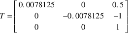

Index
1. pen2map
-
chisel/python/pen2map.py
- pen2map
converts a pen file into a
map file (doom3)
-
$ cd $HOME/Sandpit/chisel/python
$ python pen2map.py -h
Usage: pen2map [-c filename.ss] [-dhmtvV] [-o outputfile] inputfile
-c filename.ss use filename.ss as the defaults for the map file
-d debugging
-e provide comments in the map file
-g type game type. The type must be ’single’ or ’deathmatch’
-h help
-m create a doom3 map file from the pen file
-s generate statistics about the map file
-t create a txt file from the pen file
-V generate verbose information
-v print the version
-o outputfile place output into outputfile
2. pen2map overview
- parses a pen file, creates internal
data structures representing the pen map
- it then iterates over the rooms and
generates a doom3 map file
- conceptually the
generation of the rooms is rather like virtualised lego
(within chisel)
- pen2map generates
blocks and places these blocks into a world
- it will
attempt to join blocks together as long as this results in a
bigger cuboid structure
- however the doom3 map
uses planes and not blocks!
3. Construct the program in logical units
- Henry Legard proverb
- one way to
achieve this is to layer the solution
- consider our doom3 tools
4. Doom3 and chisel layering
5. Minimal box defined in the map format
-
brushDef3
{
// floor of fbrick
(0 0 -1 0) ((0.0078125 0 0.5) (0 -0.0078125 -1)) "textures/hell/cbrick2b" 0 0 0
// ceiling of fbrick
(0 0 1 -288) ((0.0078125 0 0.5) (0 -0.0078125 -1)) "textures/hell/cbrick2b" 0 0 0
// top most horizontal of fbrick
(-1 0 0 -480) ((0.0078125 0 0.5) (0 -0.0078125 -1)) "textures/hell/cbrick2b" 0 0 0
// left most vertical of fbrick
(0 -1 0 -576) ((0.0078125 0 0.5) (0 -0.0078125 -1)) "textures/hell/cbrick2b" 0 0 0
// bottom most horizontal of fbrick
(1 0 0 432) ((0.0078125 0 0.5) (0 -0.0078125 -1)) "textures/hell/cbrick2b" 0 0 0
// right most vertical of fbrick
(0 1 0 528) ((0.0078125 0 0.5) (0 -0.0078125 -1)) "textures/hell/cbrick2b" 0 0 0
}
- six planes which define a
cuboid
6. The second plane
- is the ceiling
in our example
- (0 0 1 -288) ((0.0078125 0 0.5) (0
-0.0078125 -1)) "textures/hell/cbrick2b" 0 0
0
(0 0 1 -288)
- vector (0, 0, 1)
and the closest it reaches the origin is -288 units
-
this infinite plane will have the texture
textures/hell/cbrick2b applied to
it
7. Texture transformation matrix
- the texture
uses the transformation matrix, T

general transformation matrix
is:

8. Each coordinate is transformed by

and mapped into the image
file at this new grid coordinate fortunately we
conceptualise chisel as creating a variety of lego bricks
(each is a cuboid) pen2map.py
generates floor bricks, wall bricks and ceiling
bricks
9. Conclusion
- layered
software is an important concept which allows large systems
to be built and it can hide complexity behind well defined
interfaces
- cuboids are represented by brushes in the
map
- six planes define a
brush
Index
1. pen2map
2. pen2map overview
3. Construct the program in logical units
4. Doom3 and chisel layering
5. Minimal box defined in the map format
6. The second plane
7. Texture transformation matrix
8. Each coordinate is transformed by
9. Conclusion
Index
This document was
produced using
groff-1.22.